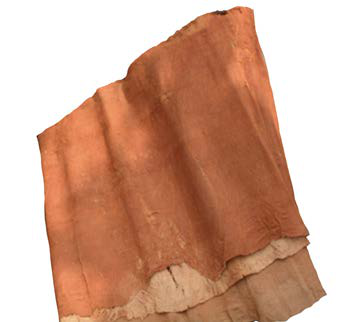
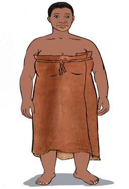
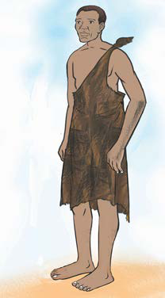

Sayansi na teknolojia asilia ya kutengeneza nguo
Jamii za kale zilikuwa na nguo za asili zilizotengenezwa kwa kutumia ngozi za wanyama na magome ya miti. Magome ya miti yalibanduliwa kutoka katika miti maalumu iliyotumika kutengeneza nguo. Sayansi na teknolojia ya kutengeneza nguo ilifanywa kwa kupondaponda magome ya miti kwa kutumia jiwe, vipande vya miti au kitu kigumu ili kuyalainisha na kupata nguo. Nguo hizi zilijulikana kama “mbungu” katika jamii za Wahaya. Pia, nguo za magome ya miti zilikuwapo katika jamii za Wamanyema, Waha, na Wahangaza. Kielelezo namba 27, kinawasilisha magome ya miti yaliyotumika kutengenezea nguo.

Kielelezo namba 27: Magome ya miti ya kutengenezea nguo
Vilevile, ngozi za wanyama zilichunwa na kuanikwa, kisha kuzilainisha kwa kupondaponda na kupaka mafuta ili kupata nguo. Kielelezo namba 28, kinawasilisha nguo za magome ya miti na ngozi za wanyama.

Nguo za magome ya miti

Nguo za ngozi ya wanyama
Kielelezo namba 28: Nguo za magome ya miti na ngozi za wanyama